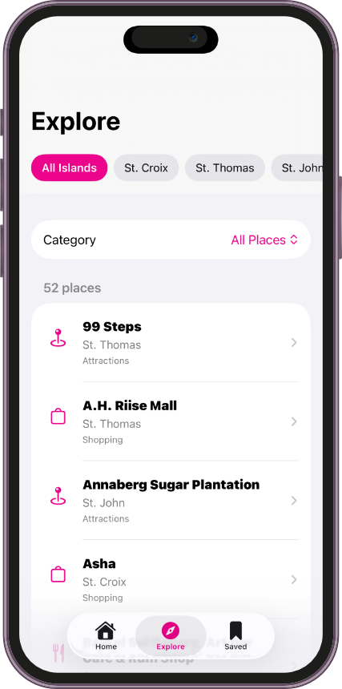
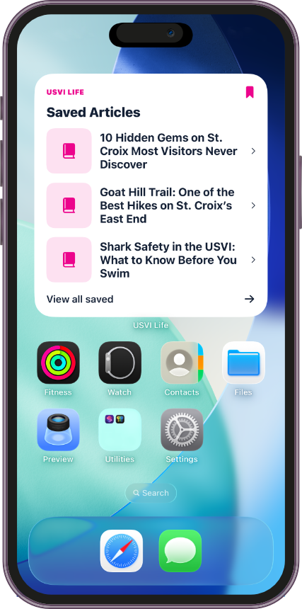
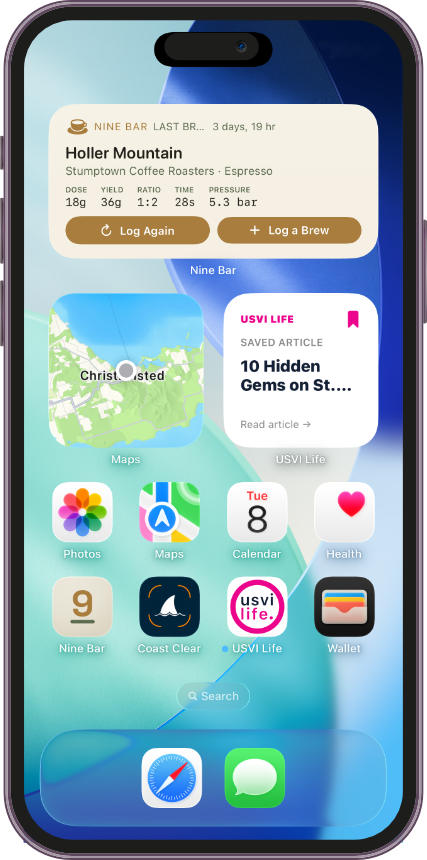
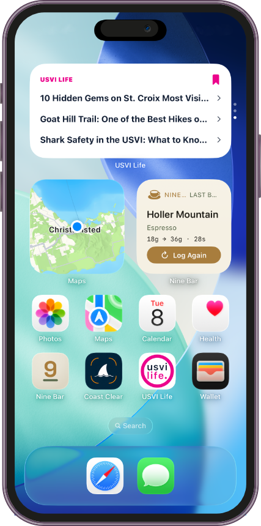

01
Explore by island
Browse places to eat, shop, and visit across St. Croix, St. Thomas, and St. John.
Discover places to eat, shop, and visit across St. Croix, St. Thomas, and St. John — and keep saved articles on your Home Screen with new widgets.


Find places worth visiting across all three islands, and keep your saved reads one glance away.
Browse places to eat, shop, and visit across St. Croix, St. Thomas, and St. John.
Narrow recommendations down by category, not just island.
Add it to your Home Screen in small, medium, or large sizes.
Tap a saved article right from your widget to pick up where you left off.
Explore places to eat, shop, and visit across St. Croix, St. Thomas, and St. John.
Add a Saved Articles widget to your Home Screen, and quickly jump back into articles you've saved.


An updated navigation experience, plus additional improvements and refinements throughout the app.
Update USVI Life on the App Store to explore new places across the islands and add the Saved Articles widget to your Home Screen.
Update on the App Store